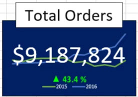
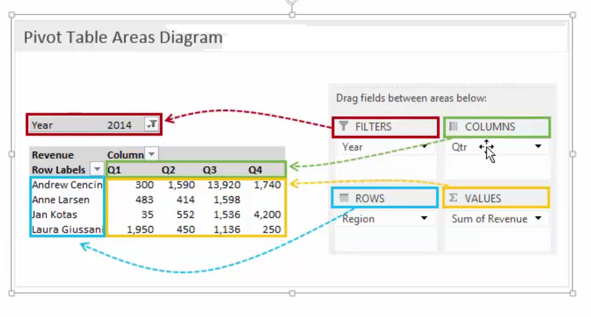

Excel Dashboard Data-card
Watch: https://www.youtube.com/watch?v=oVTMfSD8YzU
Read: https://www.howtoexcel.org/charts/kpi-data-cards/
Read Local PDF

Pivot Tables & DashBoards
Refresh a Pivot Table via VBA
ActiveSheet.PivotTables("PivotTable1").PivotCache.Refresh
ActiveWorkbook.RefreshAll
Fill all empty cells in a table with a value or a string
Sub zeroo()
- Range("A1").CurrentRegion.SpecialCells(xlCellTypeBlanks).Value = "Blank"
or try
Sub zeroo()
- Range("A1").CurrentRegion.SpecialCells(xlCellTypeBlanks).Value = 0
End Sub
Dashboards
Create a pivot tables for each item you want to show in the dashboard. Name each pivot table so you will know it later when you add slicers. Make pivot charts. They can be Copied or Cut and pasted to your dashboard. Then format your dash to look nice.
Remove old filter names
The Pivot Chart
Now you can add a text boxes to the pivot chart. With the text box you can create dynamic labels. Click on the edge of the text box, then click in the formula bar and enter a cell address like =A1. Maybe you want to concatinate your label like =A1 & "Hello world?"
The source data must not have any blank cells. If it does you can fix it like this.
Goto the source data. Filters must be on. Filter the column for blanks
- Highlight the blank cells
- Press: Alt + ;
- In the top most cell enter text to replace blanks
- Press: Ctrl + Enter
- Go back to the pivot table and click on any cell then press: Alt + F5 to refresh pivot table.
Connecting the slicer to many pivot tables
Right click on a Slicer (one at a time)
Choose: Report Connections
Check all pivot table that apply to your goal.
Now when you choose an item from the slicer all charts on the dash will update.
Choose your slicer
From the pivot table you can right click on an item and choose slicers
Coping pivot tables
Once you have the table created copy the sheet by Left click on the sheet tab then hold the Ctrl button and drag the sheet over and release mouse button. Now you quickly work on you next pivot table. This is important so that all charts on the dashboard are using the same data set. Rename the tab.
In the pivot table your data you want to see is in dates but you want to see months and years
Try Grouping the date in Months and Years. Right click and Group
My Online Training Hub
Tips and Tricks (This is a hw to PDF file)
Pivot Table Diagram
